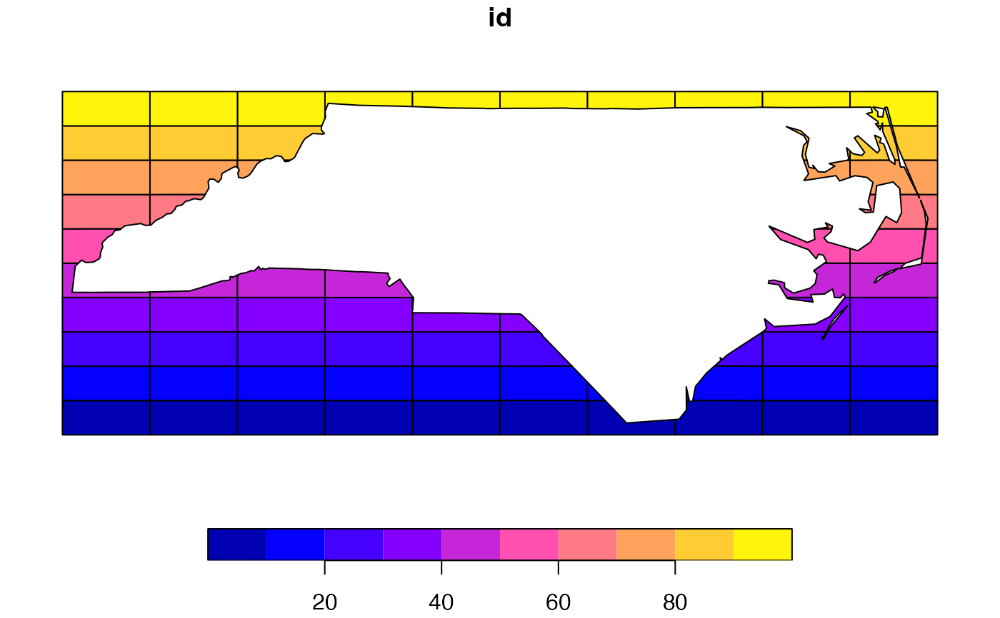

x all parts overlapped by geometry set yR/st_erase_robust.R
st_erase_robust.RdErasing from geometry set x all parts overlapped by geometry set y
st_erase_robust(x, y, ...)object of class sf, sfc or sfg
object of class sf, sfc or sfg
arguments passed on to s2_options
Returns all parts of geometry set x not overlapped by
geometry set y
The example section of the sf-package help page on geometric
operations on pairs of simple feature geometry sets
(geos_binary_ops) presents code for a helper function that
erases all parts from geometry set x overlapped by geometry set y.
This function sometimes works as expected, sometimes it doesn't. (s. examples
below).
Even when both input layers x and y consist of valid geometries
(which can be checked with st_is_valid, respectively fixed
with st_make_valid), the a. m. helper function can still
throw an error. This is often due to internally applying
st_union(st_combine()) to y. st_combine is
sometimes also the cause for returning incorrectly erased geometry. To avoid
these issues, st_erase_robust() uses st_union only.
Leaving out st_combine() may add to the complexity of the
involved geometries, thus potentially increasing the run time. To counteract
this, st_erase_robust() detects with the help of
st_intersects which geometries from the input x and
y overlap with those of the other layer and applies geometric
operations only to such geometries.
When using the helper function from the a.m. sf help page with input
having longlat degrees CRS, switching off spherical geometry (s2) by setting
sf_use_s2 to FALSE can help to overcome issues.
But this isn't a safe workaround for all issues caused by st_combine()
when it comes to erasing.
library(sf)
# find code of helper function st_erase():
# ?geos_binary_ops
# copy function code:
st_erase <- function(x, y) st_difference(x, st_union(st_combine(y)))
# get some demo data:
nc <- st_read(system.file("gpkg/nc.gpkg", package = "sf"), quiet = TRUE)
ext <- st_bbox(nc) + rep(c(-0.1, 0.1), each = 2)
grid <- st_make_grid(ext) %>% st_sf(id = seq_along(.), geom = ., agr = "constant")
st_is_longlat(nc) # demo data has a longlat degrees crs
#> [1] TRUE
sf_use_s2(TRUE)
# check if helper function works with demo data:
try(st_erase(grid, nc))
#> Error in wk_handle.wk_wkb(wkb, s2_geography_writer(oriented = oriented, :
#> Loop 0 edge 21 has duplicate near loop 20 edge 6
# internal processing of input y (nc) returns the same error as st_erase():
try(st_union(st_combine(nc)))
#> Error in wk_handle.wk_wkb(wkb, s2_geography_writer(oriented = oriented, :
#> Loop 0 edge 21 has duplicate near loop 20 edge 6
# st_erase_robust() can handle this:
st_erase_robust(grid, nc) %>% plot()
